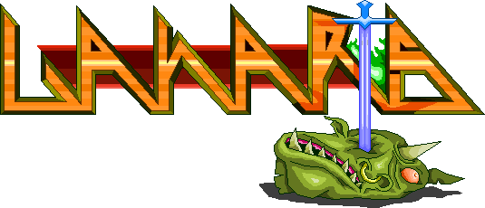

DOWNLOAD
Lanarts Update October 15th, 2017
DOWNLOAD
Lanarts, Devblog for Release 13Alpha
DOWNLOAD
Lanarts release 12, now with overworld!
DOWNLOAD
Lanarts Update March 4th, 2013
DOWNLOAD
Lanarts ARRP Release!
DOWNLOAD
Lanarts Update September 11th, 2012
Lanarts Update August 20th, 2012
Lanarts Update July 28th, 2012
Lanarts Update July 16, 2012
Lanarts Update 05/07/2012